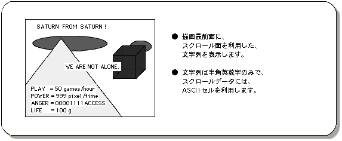
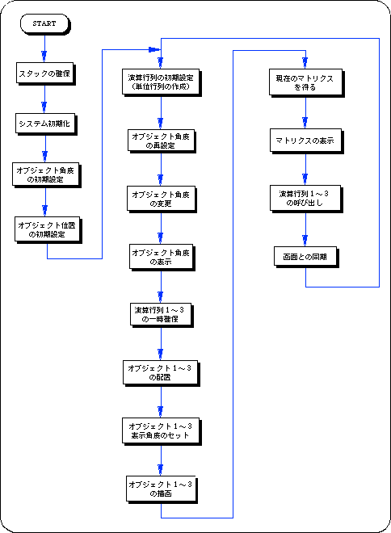

★SGL User's Manual
★PROGRAMMER'S TUTORIAL
★SGL User's Manual
★PROGRAMMER'S TUTORIAL
＜図8-30 文字数値表示イメージ＞

文字数値表示関数は、大きく次の４つに分類することができます。 表示位置の計算 ：関数に使用するための表示位置パラメータを作成します。 文字列の表示 ：指定された文字列を画面に表示します。 数値の表示 ：指定された数値を画面に表示します。 マトリクスの表示：指定されたマトリクスを画面に表示します。
| 代入値 | 出力値 | |
|---|---|---|
| slPrintHex | 00001111 | 1111 |
| slDispHex | 00001111 | 00001111 |
次のサンプルプログラム（リスト8-10）は文字数値表示関数群を実際に使用して、スクロール画面を利用した文字列および数値の画面表示を実現したものです。
リスト8-10 sample_8_12：文字数値表示
/*----------------------------------------------------------------------*/
/* Text & Value Display */
/*----------------------------------------------------------------------*/
#include "sgl.h"
extern PDATA PD_PLANE1 , PD_PLANE2 , PD_PLANE3;
static void set_poly(ANGLE ang[XYZ] , FIXED pos[XYZ])
{
slTranslate(pos[X] , pos[Y] , pos[Z]);
slRotX(ang[X]);
slRotY(ang[Y]);
slRotZ(ang[Z]);
}
void ss_main(void)
{
static ANGLE ang1[XYZ], ang2[XYZ], ang3[XYZ];
static FIXED pos1[XYZ], pos2[XYZ], pos3[XYZ];
static MATRIX mtptr;
static ANGLE adang = DEGtoANG(0.5);
static ANGLE tmp = DEGtoANG(0.0);
slInitSystem(TV_320x224,NULL,1);
slPrint("Sample program 8.12" , slLocate(6,2));
ang1[X] = ang1[Y] = ang1[Z] = DEGtoANG(0.0);
ang2[X] = ang2[Y] = ang2[Z] = DEGtoANG(0.0);
ang3[X] = ang3[Y] = ang3[Z] = DEGtoANG(0.0);
pos1[X] = toFIXED( 0.0);
pos1[Y] = toFIXED( 40.0);
pos1[Z] = toFIXED(170.0);
pos2[X] = toFIXED( 0.0);
pos2[Y] = toFIXED(-40.0);
pos2[Z] = toFIXED( 0.0);
pos3[X] = toFIXED( 0.0);
pos3[Y] = toFIXED(-40.0);
pos3[Z] = toFIXED( 0.0);
slPrint("POLYGON ANGLE [Hex] =", slLocate(1,4));
slPrint("POLYGON ANGLE [Dec] =", slLocate(1,6));
slPrint("POLYGON ANGLE [Hex&0] =", slLocate(1,8));
slPrint("POLYGON ANGLE [Dec&0] =", slLocate(1,10));
slPrint("POLYGON ANGLE [FIX] =", slLocate(1,12));
slPrint("DISPLAY Matrix :", slLocate(1,18));
while(-1){
slUnitMatrix(CURRENT);
ang1[Z] = tmp;
ang2[Z] = tmp;
tmp += adang;
if(tmp < DEGtoANG(-90.0)){
adang = DEGtoANG(0.5);
} else if(tmp > DEGtoANG(90.0)){
adang = DEGtoANG(-0.5);
}
slDispHex(slAng2Hex(tmp) , slLocate(26,4));
slDispHex(slAng2Dec(tmp) , slLocate(26,6));
slPrintHex(slAng2Hex(tmp) , slLocate(26,8));
slPrintHex(slAng2Dec(tmp) , slLocate(26,10));
slPrintFX(slAng2FX(tmp) , slLocate(26,12));
slPushMatrix();
{
set_poly(ang1 , pos1);
slPutPolygon(&PD_PLANE1);
slPushMatrix();
{
set_poly(ang2 , pos2);
slPutPolygon(&PD_PLANE2);
slPushMatrix();
{
set_poly(ang3 , pos3);
ang3[Y] += DEGtoANG(5.0);
slPutPolygon(&PD_PLANE3);
slGetMatrix(mtptr);
slPrintMatrix(mtptr , slLocate(0,20));
}
slPopMatrix();
}
slPopMatrix();
}
slPopMatrix();
slSynch();
}
}

★SGL User's Manual
★PROGRAMMER'S TUTORIAL